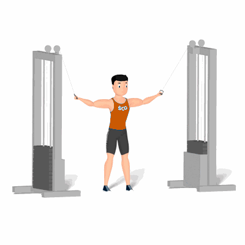

Rosca Simultânea no Cross

Exercício para fortalecimento e hipertrofia dos bíceps braquiais. Realiza de forma lenta e controlada.
Ficha Técnica
Tipo: Musculação
Grupo Muscular: Bíceps
Aparelho: Nenhum
Músculos: Nenhum
Como realizar
- Posicione as roldanas do aparelho na posição mais alta;
- No centro do aparelho Cross Over, segura as alças com as palmas das mãos voltadas para cima;
- Braços paralelos ao chão e cotovelos estendidos, essa é a posição inicial do exercício;
- Puxe as alças em direção ao corpo flexionando os cotovelos com a força dos bíceps até que as mãos fiquem próximas a cabeça;
- Afaste os pegadores do corpo de maneira controlada retornando a posição inicial, repita os movimentos.
 RC STORE
RC STORE